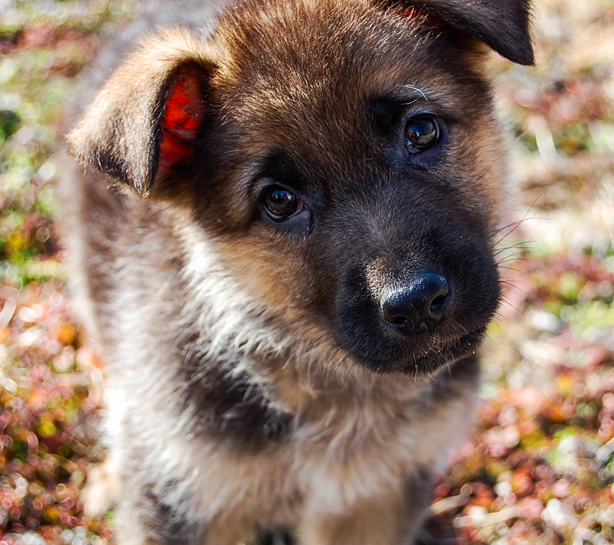
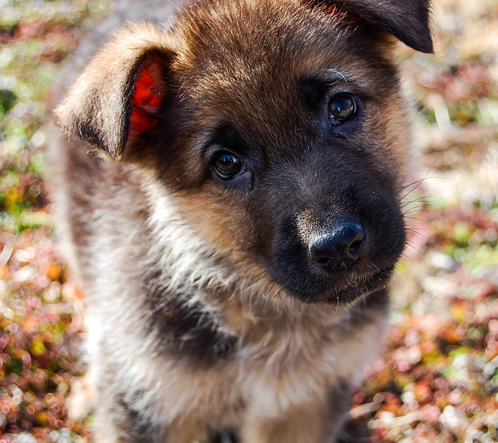

Elsie
Elsie is a 9 year old German Shepherd, born in St. Louis, Missouri, on Christmas Day, December 25, 2012. She is a fierce and loyal protector of our home, unless there is a thunderstorm or fireworks! Her favorite activity is anything in water.

Fun Facts:
Loves adventure
Feels no pain
Hates bugs
Craves violence
Should've joined the military
 
